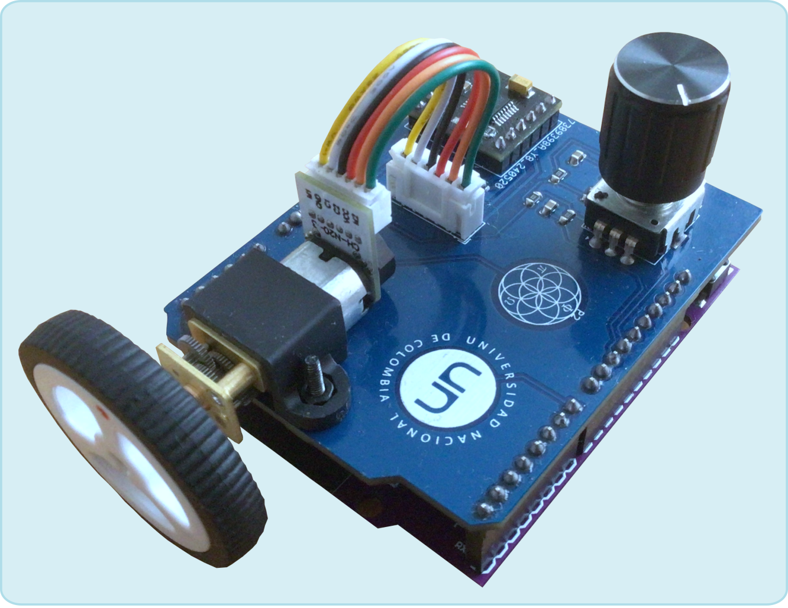

DCMotor.jl
Laboratorio portátil de control de ángulo y velocidad angular de un servomotor.
Este paquete de Julia permite hacer experimentos de control e identificación con la plataforma de experimentación portátil llamada DCMotor. Esta plataforma integra los componentes para controlar un servomotor DC por medio de un microcontrolador ESP32.

Para instalar el paquete y el firmware asociado, vea la sección Instalación del paquete. Para el listado completo de funciones, ver el panel izquierdo, en la sección Funciones (Información, Identificación y Control).
Introducción rápida
Instale el paquete directamente desde este repositorio, así:
using Pkg
Pkg.add(url="https://github.com/nebisman/DCMotor.jl")Luego, para empezar a usarlo, ejecute el siguiente código:
using DCMotor
sys = MotorSystem();
set_reference(sys,360)El sistema debe reaccionar y mostrar el cambio a una referencia de $360^o$ en ángulo.